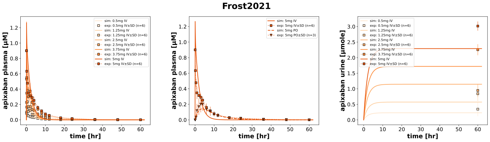
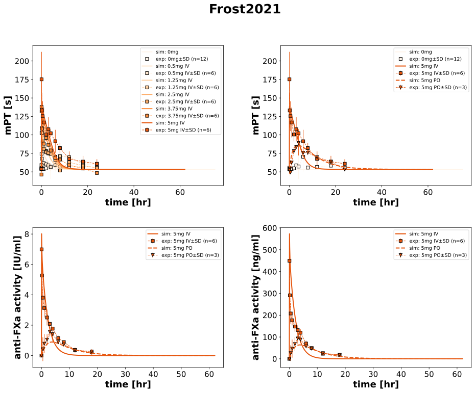
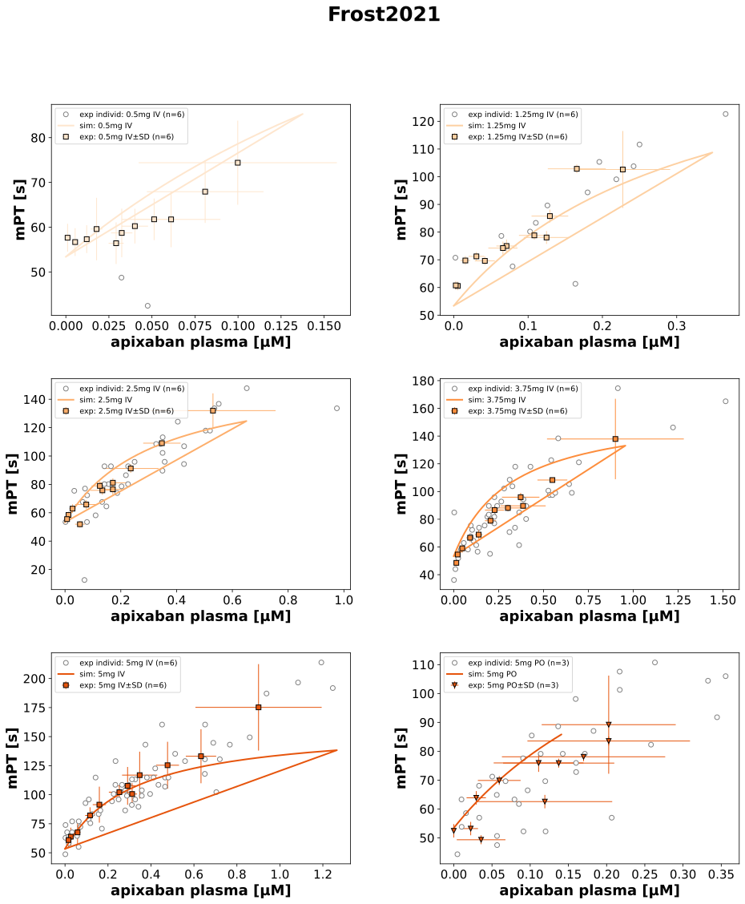

Frost2021
Models
Datasets
- IV0_5_apixaban: Frost2021_IV0_5_apixaban.tsv
- IV1_25_apixaban: Frost2021_IV1_25_apixaban.tsv
- IV2_5_apixaban: Frost2021_IV2_5_apixaban.tsv
- IV3_75_apixaban: Frost2021_IV3_75_apixaban.tsv
- IV5_apixaban: Frost2021_IV5_apixaban.tsv
- PO5_apixaban: Frost2021_PO5_apixaban.tsv
- IV0_5_prothrombin time: Frost2021_IV0_5_prothrombin time.tsv
- IV1_25_prothrombin time: Frost2021_IV1_25_prothrombin time.tsv
- IV2_5_prothrombin time: Frost2021_IV2_5_prothrombin time.tsv
- IV3_75_prothrombin time: Frost2021_IV3_75_prothrombin time.tsv
- IV5_Anti-factor Xa activity_IU: Frost2021_IV5_Anti-factor Xa activity_IU.tsv
- IV5_Anti-factor Xa activity_ng: Frost2021_IV5_Anti-factor Xa activity_ng.tsv
- IV5_prothrombin time: Frost2021_IV5_prothrombin time.tsv
- PO5_Anti-factor Xa activity_IU: Frost2021_PO5_Anti-factor Xa activity_IU.tsv
- PO5_Anti-factor Xa activity_ng: Frost2021_PO5_Anti-factor Xa activity_ng.tsv
- PO5_prothrombin time: Frost2021_PO5_prothrombin time.tsv
- plb_prothrombin time: Frost2021_plb_prothrombin time.tsv
- IV0_5_apixaban_plasma_vs_PT: Frost2021_IV0_5_apixaban_plasma_vs_PT.tsv
- IV1_25_apixaban_plasma_vs_PT: Frost2021_IV1_25_apixaban_plasma_vs_PT.tsv
- IV2_5_apixaban_plasma_vs_PT: Frost2021_IV2_5_apixaban_plasma_vs_PT.tsv
- IV3_75_apixaban_plasma_vs_PT: Frost2021_IV3_75_apixaban_plasma_vs_PT.tsv
- IV5_apixaban_plasma_vs_Anti-factor Xa activity_IU: Frost2021_IV5_apixaban_plasma_vs_Anti-factor Xa activity_IU.tsv
- IV5_apixaban_plasma_vs_Anti-factor Xa activity_ng: Frost2021_IV5_apixaban_plasma_vs_Anti-factor Xa activity_ng.tsv
- IV5_apixaban_plasma_vs_PT: Frost2021_IV5_apixaban_plasma_vs_PT.tsv
- PO5_apixaban_plasma_vs_Anti-factor Xa activity_IU: Frost2021_PO5_apixaban_plasma_vs_Anti-factor Xa activity_IU.tsv
- PO5_apixaban_plasma_vs_Anti-factor Xa activity_ng: Frost2021_PO5_apixaban_plasma_vs_Anti-factor Xa activity_ng.tsv
- PO5_apixaban_plasma_vs_PT: Frost2021_PO5_apixaban_plasma_vs_PT.tsv
- IV0_5_apixaban_plasma_vs_PT_mean: Frost2021_IV0_5_apixaban_plasma_vs_PT_mean.tsv
- IV1_25_apixaban_plasma_vs_PT_mean: Frost2021_IV1_25_apixaban_plasma_vs_PT_mean.tsv
- IV2_5_apixaban_plasma_vs_PT_mean: Frost2021_IV2_5_apixaban_plasma_vs_PT_mean.tsv
- IV3_75_apixaban_plasma_vs_PT_mean: Frost2021_IV3_75_apixaban_plasma_vs_PT_mean.tsv
- IV5_apixaban_plasma_vs_Anti-factor Xa activity_IU_mean: Frost2021_IV5_apixaban_plasma_vs_Anti-factor Xa activity_IU_mean.tsv
- IV5_apixaban_plasma_vs_Anti-factor Xa activity_ng_mean: Frost2021_IV5_apixaban_plasma_vs_Anti-factor Xa activity_ng_mean.tsv
- IV5_apixaban_plasma_vs_PT_mean: Frost2021_IV5_apixaban_plasma_vs_PT_mean.tsv
- PO5_apixaban_plasma_vs_Anti-factor Xa activity_IU_mean: Frost2021_PO5_apixaban_plasma_vs_Anti-factor Xa activity_IU_mean.tsv
- PO5_apixaban_plasma_vs_Anti-factor Xa activity_ng_mean: Frost2021_PO5_apixaban_plasma_vs_Anti-factor Xa activity_ng_mean.tsv
- PO5_apixaban_plasma_vs_PT_mean: Frost2021_PO5_apixaban_plasma_vs_PT_mean.tsv
- cumulative amount_apix_IVaverage: Frost2021_cumulative amount_apix_IVaverage.tsv
- cumulative amount_group1_IV0_5: Frost2021_cumulative amount_group1_IV0_5.tsv
- cumulative amount_group2_IV1_25: Frost2021_cumulative amount_group2_IV1_25.tsv
- cumulative amount_group3_IV2_5: Frost2021_cumulative amount_group3_IV2_5.tsv
- cumulative amount_group4_IV3_75: Frost2021_cumulative amount_group4_IV3_75.tsv
- cumulative amount_group5_IV5: Frost2021_cumulative amount_group5_IV5.tsv
- cumulative amount_group_po_PO5: Frost2021_cumulative amount_group_po_PO5.tsv
Figures
- FigPK: Frost2021_FigPK.svg
- FigPD: Frost2021_FigPD.svg
- mPT: Frost2021_mPT.svg
- Anti-factor Xa activity: Frost2021_Anti-factor Xa activity.svg
{kind=link}
{kind=link}
{kind=link}
FigPK
|
 |
FigPD
|
 |
mPT
|
 |
Anti-factor Xa activity

|
Code
../../../../experiments/studies/frost2021.py
import math
from typing import Dict
from sbmlsim.data import DataSet, load_pkdb_dataframe
from sbmlsim.fit import FitMapping, FitData
from sbmlutils.console import console
from pkdb_models.models.apixaban.experiments.base_experiment import (
ApixabanSimulationExperiment,
)
from pkdb_models.models.apixaban.experiments.metadata import Tissue, Route, Dosing, ApplicationForm, Health, \
Fasting, ApixabanMappingMetaData
from sbmlsim.plot import Axis, Figure
from sbmlsim.simulation import Timecourse, TimecourseSim
from pkdb_models.models.apixaban.helpers import run_experiments
class Frost2021(ApixabanSimulationExperiment):
"""Simulation experiment of Frost2021."""
bodyweights = {
"group1": 75.8, "group2": 74.8, "group3": 80.6,
"group4": 82.4, "group5": 83.1, "group_po": 79,
}
doses = {
"group1": 0.5, "group2": 1.25, "group3": 2.5,
"group4": 3.75, "group5": 5, "group_po": 5,
}
inr = {
"group1": 1.12, "group2": 1.1, "group3": 1.13,
"group4": 1.08, "group5": 1.08, "group_po": 1.14,
}
bodyheight = {
"group1": math.sqrt(75.8 / 24.9), "group2": math.sqrt(74.8 / 24.2), "group3": math.sqrt(80.6 / 25),
"group4": math.sqrt(82.4 / 26.7), "group5": math.sqrt(83.1 / 26.1), "group_po": 1.7,
}
routes = {
"group1": "IV0_5", "group2": "IV1_25", "group3": "IV2_5",
"group4": "IV3_75", "group5": "IV5", "group_po": "PO5",
}
doses_colors = {
0: "#fff5eb", 0.5: "#fee6ce", 1.25: "#fdd0a2",
2.5: "#fdae6b", 3.75: "#fd8d3c", 5: "#e6550d",
}
markers = {"IV": "s", "PO": "v"}
linestyle = {"IV": "solid", "PO": "dashed"}
# Group information
groups = list(bodyweights.keys())
# Information mapping for metadata
info_fig1 = {
"[Cve_api]": "apixaban",
"mPT": "prothrombin time",
"antiXa_activity": "antiXa activity",
"antiXa_activity_gram": "antiXa activity",
}
def datasets(self) -> Dict[str, DataSet]:
dsets = {}
self.pt = {}
for fig_id, group_id in zip(["Fig1", "Fig2", "Fig3", "Fig1_2Mean", "Tab2"], ["label", "label", "x_label", "x_label", "label"]):
df = load_pkdb_dataframe(f"{self.sid}_{fig_id}", data_path=self.data_path)
for label, df_label in df.groupby(group_id):
dset = DataSet.from_df(df_label, self.ureg)
if "cumulative amount" in label:
dset.unit_conversion("mean", 1 / self.Mr.api)
dsets[label] = dset
if "apixaban" in label:
if fig_id in ["Fig3", "Fig1_2Mean"]:
dset.unit_conversion("x", 1 / self.Mr.api)
else:
dset.unit_conversion("mean", 1 / self.Mr.api)
if "antiXa_activity_gram" not in label and fig_id != "Tab2":
dsets[label] = dset
if fig_id == "Fig2" and "prothrombin time" in label:
dset_0 = dset[dset.time == 0.0]
self.pt[dset_0["group"].iloc[0]] = float(dset_0["mean"].iloc[0])
# print(label)
# console.print(dsets)
return dsets
def simulations(self) -> Dict[str, TimecourseSim]:
Q_ = self.Q_
tcsims = {}
for group in self.groups:
tcsims[group] = TimecourseSim(
[Timecourse(
start=0,
end=62 * 60, # [min]
steps=1000,
changes={
**self.default_changes(),
"BW": Q_(self.bodyweights[group], "kg"),
f"{self.routes[group][0:2]}DOSE_api": Q_(self.doses[group], "mg"),
"HEIGHT": Q_(self.bodyheight[group], "m"),
"INR_ref": Q_(self.inr[group], "dimensionless"),
"PT_ref": Q_(self.pt[group], "s"),
},
)]
)
# placebo
tcsims["placebo"] = TimecourseSim(
[Timecourse(
start=0,
end=75 * 60, # [min]
steps=1000,
changes={
**self.default_changes(),
"BW": Q_(78.7, "kg"), #iv placebo taken
f"IVDOSE_api": Q_(0, "mg"),
"HEIGHT": Q_(math.sqrt(78.7/25), "m"),
"INR_ref": Q_(1.11, "dimensionless"),
"PT_ref": Q_(self.pt["placebo"], "s"),
},
)]
)
return tcsims
def fit_mappings(self) -> Dict[str, FitMapping]:
mappings = {}
# Centralized logic in a dictionary
fit_mapping_rules = {
"[Cve_api]": {
"dset_id": lambda route, group: f"{route}_apixaban",
"in_mapping": lambda group: True,
},
"Aurine_api": {
"dset_id": lambda route, group: f"cumulative amount_{group}_{route}",
"in_mapping": lambda group: True,
},
"mPT": {
"dset_id": lambda route, group: f"{route}_prothrombin time",
"in_mapping": lambda group: True,
},
"antiXa_activity_gram": {
"dset_id": lambda route, group: f"{route}_Anti-factor Xa activity_ng" if group in ["group5", "group_po"] else "",
"in_mapping": lambda group: group in ["group5", "group_po"],
},
"antiXa_activity": {
"dset_id": lambda route, group: f"{route}_Anti-factor Xa activity_IU" if group in ["group5", "group_po"] else "",
"in_mapping": lambda group: group in ["group5", "group_po"],
},
}
for group in self.groups:
route = self.routes[group]
for sid, name in self.info_fig1.items():
if sid in fit_mapping_rules:
rule = fit_mapping_rules[sid]
dset_id = rule["dset_id"](route, group)
in_mapping = rule["in_mapping"](group)
if in_mapping:
mappings[f"fm_{name}_{group}_{route}"] = FitMapping(
self,
reference=FitData(
self,
dataset=dset_id,
xid="time",
yid="mean",
yid_sd="mean_sd",
count="count",
),
observable=FitData(
self,
task=f"task_{group}",
xid="time",
yid=sid,
),
metadata=ApixabanMappingMetaData(
tissue=Tissue.URINE if sid == "Aurine_api" else Tissue.PLASMA,
route=Route.PO if route[:2] == "PO" else Route.IV,
application_form=ApplicationForm.TABLET if route[:2] == "PO" else ApplicationForm.NR,
dosing=Dosing.SINGLE,
health=Health.HEALTHY,
fasting=Fasting.FASTED if route[:2] == "PO" else Fasting.NR,
),
)
mappings["fm_placebo"] = FitMapping(
self,
reference=FitData(
self,
dataset="plb_prothrombin time",
xid="time",
yid="mean",
yid_sd="mean_sd",
count="count",
),
observable=FitData(
self,
task="task_placebo",
xid="time",
yid="mPT",
),
metadata=ApixabanMappingMetaData(
tissue=Tissue.PLASMA,
route=Route.IV, # assumed for mapping, otherwise placebo group contains IV and PO
application_form=ApplicationForm.NR,
dosing=Dosing.SINGLE,
health=Health.HEALTHY,
fasting=Fasting.FASTED,
),
)
return mappings
def figures(self) -> Dict[str, Figure]:
return {
**self.figure_pk(),
**self.figure_pd(),
**self.figure_scatter(),
}
def figure_pk(self) -> Dict[str, Figure]:
data = {
0: ["group1", "group2", "group3", "group4", "group5"],
1: ["group5", "group_po"],
2: ["group1", "group2", "group3", "group4", "group5"],
}
sids = {
0: "[Cve_api]",
1: "[Cve_api]",
2: "Aurine_api"
}
y_axes = {
0: (self.label_api_plasma, self.unit_api, "linear"),
1: (self.label_api_plasma, self.unit_api, "linear"),
2: (self.label_api_urine, self.unit_api_urine, "linear"),
}
# Dynamic dataset ID and SID determination
datasets = {
0: lambda route, group: f"{route}_apixaban",
1: lambda route, group: f"{route}_apixaban",
2: lambda route, group: f"cumulative amount_{group}_{route}",
}
fig = Figure(
experiment=self,
sid="FigPK",
name=self.__class__.__name__,
num_rows=1,
num_cols=3,
height=self.panel_height,
width=self.panel_width * 3 * 1.05,
)
plots = fig.create_plots(
xaxis=Axis(self.label_time, unit=self.unit_time),
legend=True,
)
for kp, (label, unit, scale) in y_axes.items():
plots[kp].set_yaxis(label, unit=unit, scale=scale)
# Data inspection and group-level additions
for kp, group_data in data.items():
for group in group_data:
dose = self.doses[group]
route = self.routes[group]
# Only process the current data if applicable
if kp in datasets:
dset_id = datasets[kp](route, group)
sid = sids[kp]
# Add simulation data
plots[kp].add_data(
task=f"task_{group}",
xid="time",
yid=sid,
label=f"sim: {dose}mg {route[:2]}",
color=self.doses_colors[dose],
linestyle=self.linestyle[route[:2]],
)
# Add experimental data
plots[kp].add_data(
dataset=dset_id,
xid="time",
yid="mean",
yid_sd="mean_sd",
count="count",
label=f"exp: {dose}mg {route[:2]}",
color=self.doses_colors[dose],
marker=self.markers[route[:2]],
)
return {fig.sid: fig}
def figure_pd(self) -> Dict[str, Figure]:
data = {
0: ["group1", "group2", "group3", "group4", "group5"],
1: ["group5", "group_po"],
2: ["group5", "group_po"],
3: ["group5", "group_po"],
}
sids = {
0: "mPT",
1: "mPT",
2: "antiXa_activity",
3: "antiXa_activity_gram",
}
y_axes = {
0: (self.labels["mPT"], self.units["mPT"], "linear"),
1: (self.labels["mPT"], self.units["mPT"], "linear"),
2: (self.labels["antiXa_activity"], self.units["antiXa_activity"], "linear"),
3: (self.labels["antiXa_activity_gram"], self.units["antiXa_activity_gram"], "linear"),
}
# Dynamic dataset ID and SID determination
datasets = {
0: lambda route: f"{route}_prothrombin time",
1: lambda route: f"{route}_prothrombin time",
2: lambda route: f"{route}_Anti-factor Xa activity_IU",
3: lambda route: f"{route}_Anti-factor Xa activity_ng",
}
fig = Figure(
experiment=self,
sid="FigPD",
name=self.__class__.__name__,
num_rows=2,
num_cols=2,
height=self.panel_height * 2,
width=self.panel_width * 2,
)
plots = fig.create_plots(
xaxis=Axis(self.label_time, unit=self.unit_time),
legend=True,
)
for kp, (label, unit, scale) in y_axes.items():
plots[kp].set_yaxis(label, unit=unit, scale=scale)
# Handle placebo plotting
for kp_pt in [0, 1]:
plots[kp_pt].add_data(
task="task_placebo",
xid="time",
yid="mPT",
label="sim: 0mg",
color=self.doses_colors[0],
)
plots[kp_pt].add_data(
dataset="plb_prothrombin time",
xid="time",
yid="mean",
yid_sd="mean_sd",
count="count",
label="exp: 0mg",
color=self.doses_colors[0],
)
# Data inspection and group-level additions
for kp, group_data in data.items():
for group in group_data:
dose = self.doses[group]
route = self.routes[group]
# Only process the current data if applicable
if kp in datasets:
dset_id = datasets[kp](route)
sid = sids[kp]
# Add simulation data
plots[kp].add_data(
task=f"task_{group}",
xid="time",
yid=sid,
label=f"sim: {dose}mg {route[:2]}",
color=self.doses_colors[dose],
linestyle=self.linestyle[route[:2]],
)
# Add experimental data
plots[kp].add_data(
dataset=dset_id,
xid="time",
yid="mean",
yid_sd="mean_sd",
count="count",
label=f"exp: {dose}mg {route[:2]}",
color=self.doses_colors[dose],
marker=self.markers[route[:2]],
)
return {fig.sid: fig}
def figure_scatter(self) -> Dict[str, Figure]:
figures_config = [
{"sid": "mPT", "num_rows": 3, "num_cols": 2},
{"sid": "Anti-factor Xa activity", "num_rows": 1, "num_cols": 2},
]
style_mean = lambda dose, route: (
# simulations
dict(
color=self.doses_colors[dose],
linestyle=self.linestyle[route[:2]] if route[:2] == "IV" else "solid",
),
# data
dict(
xid_sd="x_sd",
yid_sd="y_sd",
color=self.doses_colors[dose],
marker=self.markers[route[:2]],
linestyle="",
),
)
style_indiv = lambda dose: (
dict(
color=self.doses_colors[dose],
linestyle="",
marker="o",
),
dict(
color="white",
markeredgecolor="tab:grey",
marker="o",
linestyle="",
markeredgewidth=1,
),
)
# Create figures and plots
figures = {}
plots_lookup = {}
for config in figures_config:
fig = Figure(
experiment=self,
sid=config["sid"],
name=self.__class__.__name__,
num_rows=config["num_rows"],
num_cols=config["num_cols"],
height=self.panel_height * config["num_rows"],
width=self.panel_width * config["num_cols"],
)
plots = fig.create_plots(
xaxis=Axis(self.label_api_plasma, unit=self.unit_api), legend=True
)
figures[config["sid"]] = fig
plots_lookup[config["sid"]] = plots
for kp, group in enumerate(self.groups):
dose = self.doses[group]
route = self.routes[group]
datasets = [
("mPT", plots_lookup["mPT"], f"{route}_apixaban_plasma_vs_PT"),
("antiXa_activity", plots_lookup["Anti-factor Xa activity"],
f"{route}_apixaban_plasma_vs_Anti-factor Xa activity_IU"),
]
indiv_style = style_indiv(dose)
mean_style = style_mean(dose, route)
for yid, plots, dset_id in datasets:
if yid == "antiXa_activity" and group not in ["group5", "group_po"]:
continue
current_kp = kp - 4 if yid == "antiXa_activity" else kp
plots[current_kp].set_yaxis(self.labels[yid], unit=self.units[yid], scale="linear")
for idx, style in zip([dset_id, f"{dset_id}_mean"], [indiv_style, mean_style]):
if "mean" in idx:
# simulation
plots[current_kp].add_data(
task=f"task_{group}",
xid="[Cve_api]",
yid=yid,
label=f"sim: {dose}mg {route[:2]}",
**style[0],
)
plots[current_kp].add_data(
xid="x",
yid="y",
dataset=idx,
count="count",
label=f"exp: {dose}mg {route[:2]}" if "mean" in idx else f"exp individ: {dose}mg {route[:2]}",
**style[1],
)
return figures
if __name__ == "__main__":
run_experiments(Frost2021, output_dir=Frost2021.__name__)